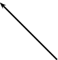
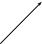

Two charges of ~ and ~ are separated by a distance of ~. What is the electrostatic force between the two charges?
Two conducting metal spheres carrying charges of ~ and ~ are separated by a distance of ~.
What is the electrostatic force between the spheres?
The two spheres are touched and then separated by a distance of ~. What are the new charges on the spheres?
The spheres are conducting and so when they touch the charge is spread equally across the two spheres. So the new charge on each sphere is:
What is new electrostatic force between the spheres at this distance?
The electrostatic force between two charged spheres of ~ and ~ respectively is ~. What is the distance between the spheres?
Draw the electric field pattern lines between:
two equal positive point charges.

<code>
(-6,-4)(6,4)
\psElectricfield[Q={[5 -2 0][5 2 0]},N=13,points=150,stepFactor=2.0]
\rput(-2,0){+Q}
\rput(2,0){+Q}
</code>two equal negative point charges.

<code>
(-6,-4)(6,4)
\psElectricfield[Q={[-5 -2 0][-5 2 0]},N=13,points=150,stepFactor=2.0]
\rput(-2,0){\color{white}-Q}
\rput(2,0){\color{white}-Q}
</code>Two small identical metal spheres, on insulated stands, carry charges and respectively. When the centres of the spheres are separated by a distance d the one exerts an electrostatic force of magnitude F on the other.
<code>
(0,0)(4.6,3)
\SpecialCoor
\psframe(0,0)(0.5,0.5) \psline[linewidth=2pt](0.25,1.5)(0.25,0.5)
\pscircle(0.25,1.75){0.25} \rput(4,0){\psframe(0,0)(0.5,0.5)
\psline[linewidth=2pt](0.25,1.5)(0.25,0.5)
\pscircle(0.25,1.75){0.25}} \psline{}(0.25,1.75)(4.25,1.75)
\uput[u](2.25,1.750){$d$} \uput[u](0.25,2){$-q$}
\uput[u](4.25,2){$+3q$}
</code>The spheres are now made to touch each other and are then brought back to the same distance d apart. What will be the magnitude of the electrostatic force which one sphere now exerts on the other?
[SC 2003/11]
Three point charges of magnitude ~, ~ and ~ respectively are placed on the three corners of an equilateral triangle as shown.

<code>
(-2,-0.6)(2,3.2)
\SpecialCoor \psline(0,0)({3;120}) \psline(0,0)({3;60})
\psline({3;60})({3;120}) \psdots(0,0)({3;60})({3;120})
\uput[u]({3;120}){+1 $\mu$C} \uput[u]({3;60}){+1 $\mu$C}
\uput[d](0,0){-1 $\mu$C}
</code>Which vector best represents the direction of the resultant force acting on the ~ charge as a result of the forces exerted by the other two charges?
<code>
(.5,0)(1.5,2)
\SpecialCoor \rput(1,0){\psline{->}(0,0)({2;90})}
</code> | <code>
(0.5,0)(1.5,2)
\SpecialCoor \rput(1,0){\psline{->}({2;90})(0,0)}
</code> |  <code>
(0,0)(2,2)
\SpecialCoor \rput(1.75,0.25){\psline{->}(0,0)({2;135})}
</code> |  <code>
(0,0)(2,2)
\SpecialCoor \rput(0.25,0.25){\psline{->}(0,0)({2;45})}
</code> |
(a) | (b) | (c) | (d) |
[SC 2003/11]
a
Write a statement of Coulomb's law.
The magnitude of the electrostatic force between two point charges is directly proportional to the product of the magnitudes of the charges and inversely proportional to the square of the distance between them.
Calculate the magnitude of the force exerted by a point charge of ~ on another point charge of ~ separated by a distance of ~.
Sketch the electric field between two point charges of ~ and ~, respectively, placed ~ apart from each other.
<code>
(-6.5,-4)(6.5,4)
\psElectricfield[Q={[-3 -2 0][10 2 0]},N=15,points=150,stepFactor=3.0,runit=0.8]
\rput(2,0){+2 nC}
\rput(-2,0){\color{white}-3 nC}
</code>The electric field strength at a distance from a point charge is E. What is the magnitude of the electric field strength at a distance away from the point charge?
[SC 2002/03 HG1]